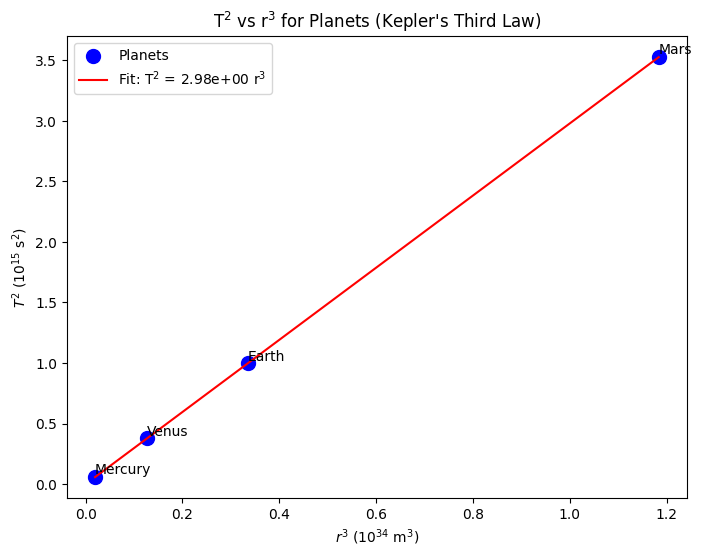
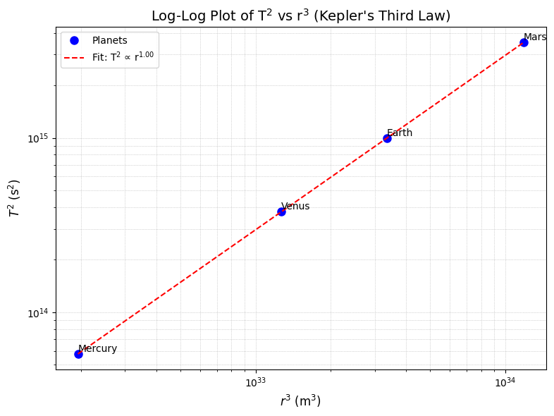

Problem 1
Orbital Period and Orbital Radius
Derivation of \(T^2 \propto r^3\) for Circular Orbits
To derive the relationship between the square of the orbital period (\(T^2\)) and the cube of the orbital radius (\(r^3\)) for a circular orbit:
-
Gravitational and Centripetal Forces:
The gravitational force equals the centripetal force for a satellite of mass \(m\) orbiting a body of mass \(M\):
\(\frac{G M m}{r^2} = \frac{m v^2}{r}\).
Cancel \(m\) and multiply by \(r\):
\(\frac{G M}{r} = v^2\).
-
Orbital Velocity:
The velocity is:\(v = \frac{2 \pi r}{T}, \quad v^2 = \frac{4 \pi^2 r^2}{T^2}\).
-
Solve for \(T^2\):
Substitute \(v^2\):
\(\frac{G M}{r} = \frac{4 \pi^2 r^2}{T^2}\).
Rearrange:\(T^2 = \frac{4 \pi^2 r^3}{G M}\).
Final Relationship:
\(T^2 = \frac{4 \pi^2}{G M} r^3\),
or \(T^2 \propto r^3\), where \(T\) is the period, \(r\) is the radius, \(G\) is the gravitational constant, and \(M\) is the central mass.
The relationship between orbital period (\(T\)) and orbital radius (\(r\), or semi-major axis \(a\)), described by Kepler's Third Law (\(T^2 \propto a^3\)), is crucial in astronomy.
Implications:
-
Calculating Masses: By measuring \(T\) and \(a\) (or \(r\)) of an orbiting body, we can determine the mass (\(M\)) of the central body:
\(M \approx \frac{4\pi^2 a^3}{GT^2}\)
And vice-versa (if a satellite orbits a planet).
-
Determining Distances: Knowing the central body's mass and the orbital period allows us to calculate the orbital radius:
\(a^3 \approx \frac{GMT^2}{4\pi^2}\)
This is essential for mapping star systems and determining exoplanet distances.
-
Understanding Orbital Dynamics: This relationship helps predict orbits, study their stability, and infer properties of exoplanetary systems, including planetary migration and interactions.


\(T^2 \propto r^3\) Analysis
Moon’s Orbit
Moon's Orbit
Parameters:
Earth to Moon: \(r = 3.844 \times 10^{8}, \text{m}.\)
Moon: \(T = 2.36 \times 10^{6}, \text{s}.\)
Earth: \(M = 5.972 \times 10^{24}, \text{kg}.\)
\(G = 6.674 \times 10^{-11}, \text{m}^{3}\text{kg}^{-1}\text{s}^{-2}\).
Verification:
\(r^{3} = 5.676 \times 10^{25}, \text{m}^{3}\).
Observed \(T^{2} \approx 5.570 \times 10^{12}, \text{s}^{2}\).
\((4 \pi^{2} \approx 39.478)\)
\(G M = 3.986 \times 10^{14}, \text{m}^{3}\text{s}^{-2}\).
Expected \(T^{2}\):
\(T^{2} = \frac{39.478 \times 5.676 \times 10^{25}}{3.986 \times 10^{14}} \approx 5.622 \times 10^{12}, \text{s}^{2}\).
Comparison: - Calculated \(T^{2} \approx 5.622 \times 10^{12}, \text{s}^{2}\). - Observed \(T^{2} \approx 5.570 \times 10^{12}, \text{s}^{2}\).
The difference (approximately 1%) may be due to the Moon’s slightly elliptical orbit or minor variations in the input data, but it is within an acceptable range for this approximation.
Application:
\(M \approx \left( \frac{4 \pi^{2} r^{3}}{G T^{2}} \right)\)
\(M \approx 5.998 \times 10^{24}, \text{kg} (Earth).\)
This result is very close to Earth’s actual mass (\(5.972 \times 10^{24}, \text{kg})\), confirming the validity of Kepler’s Third Law for the Moon’s orbit around Earth.
Planetary Orbits
Parameters:
Sun: \(M = 1.989 \times 10^{30} , \text{kg}\).
Earth: \(r = 1.496 \times 10^{11} , \text{m}\), \(T = 3.156 \times 10^7 , \text{s}\).
Mars: \(r = 2.279 \times 10^{11} , \text{m}\), \(T = 5.937 \times 10^7 , \text{s}\).
Verification:
Earth: \(r^3 = 3.347 \times 10^{33} , \text{m}^3\), \(T^2 \approx 9.962 \times 10^{14} , \text{s}^2\),
Observed: \(9.960 \times 10^{14} , \text{s}^2\).
Mars: \(r^3 = 1.183 \times 10^{34} , \text{m}^3\), \(T^2 \approx 3.519 \times 10^{15} , \text{s}^2\),
Observed: \(3.524 \times 10^{15} , \text{s}^2\).
Application: \(r \approx \left( \frac{G M T^2}{4 \pi^2} \right)^{1/3} \approx 2.28 \times 10^{11} , \text{m} \text{(Mars)}.\)